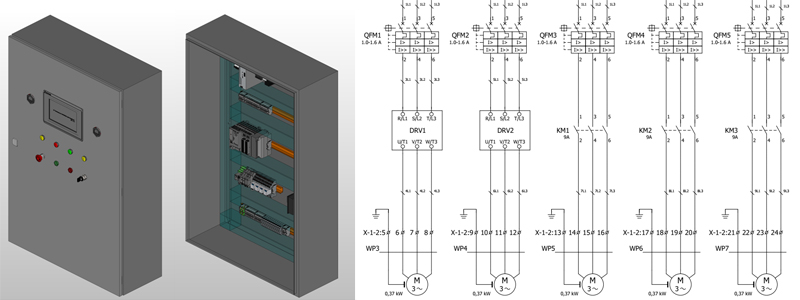
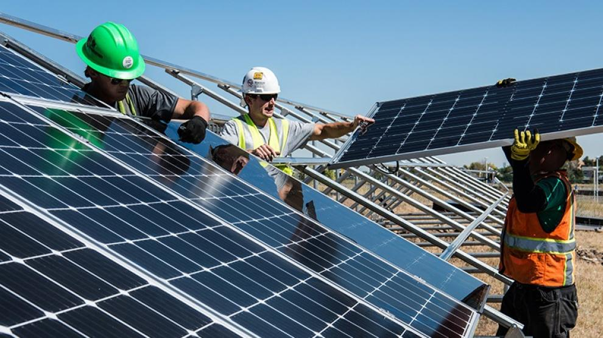

Sistemas de Control Industrial
Somos especialistas en desarrollo de sistemas de control industrial, enfocados en la optimización de procesos, maximizando la producción de máquinas y líneas de producción sin descuidar la calidad y seguridad de las mismas. Nuestras tareas incluyen:
Programación de PLC
Delta
Siemens
Festo
Programación de pantallas HMI
Optimización de lazos de control
Configuración de Redes de comunicación industriales
Configuración de Variadores de Velocidad y Servodrives
Desarrollo de Software
Contamos con un equipo de desarrollo e implementación de software industrial, con foco en la calidad y la robustez de soluciones que combinen la optimización de procesos y la seguridad de la planta. Nuestro abanico de soluciones abarca:
Implementacion de Sistemas SCADA
Contamos con nuestro propio software de gestión de mantenimiento IMWAI
Ingeniería y Consultoría
Nuestras capacidades tecnológicas, experiencia y metodologías de trabajo y control garantizan la calidad de los productos y servicios que ofrecemos a nuestros clientes. Metaltronik es una compañía tecnológicamente abierta, hecho que nos permite proveer en cada proyecto la solución que mejor se adapta a las necesidades del cliente. Contamos con un sólido equipo de profesionales y los recursos tecnológicos de última generación que nos permiten proveer:
Estudios de viabilidad técnico-económica
Selección de tecnologías
Ingeniería conceptual
Ingeniería básica
Ingeniería de detalle
Evaluación de desempeño de instalaciones y resolución de problemas en planta
Optimización de procesos y estudios de ingeniería de valor
Tableros y Montajes Eléctricos

Contamos con un equipo de técnicos especializados en el armado de tableros, prestando especial detalle en la calidad de las terminaciones y el cumplimiento de la ingeniería. Todos nuestros tableros se envían al cliente testeados íntegramente con los protocolos de ensayo que indican las normas. Nos especializamos en:
Armado de tableros de control
Armado de tableros de distribución
Armado de CCM`s
También tenemos un plantel para tareas de montaje en planta con experiencia comprobada en procesos industriales que nos garantizan el éxito y cumplimento en tiempo y forma de nuestras obras, desarrollando tareas de:
Tendido de cables de potencia
Tendido de bandejas portacables y canalizaciones eléctricas
Instalación de sistemas de aire comprimido
Tendido de red de datos industriales
Cableado de sensores
Instalación de accionamientos
Instalaciones solares
Contamos con un equipo de técnicos altamente capacitados en instalaciones foltovoltaicas, prestando especial detalle en la calidad de las terminaciones y el cumplimiento de la ingeniería. Nos especializamos en:
Análisis de proyectos
Cálculos e ingenieria
Instalación de paneles